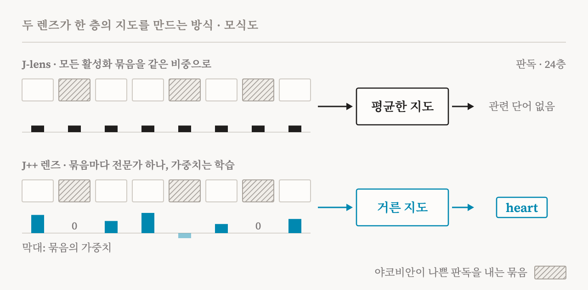
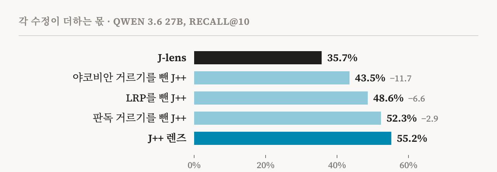
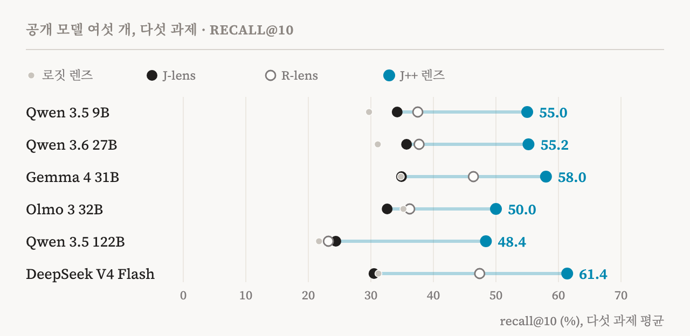

2026년 7월, Anthropic의 해석가능성 팀은 언어 모델의 중간을 단어로 읽어 내는 도구인 야코비안 렌즈(J-lens)를 내놓았습니다. 이 논문은 앞서 이곳에서 자세히 읽었습니다. 그 논문이 그린 그림은 인상적이었습니다. 모델 안에는 말로 꺼낼 수 있는 작은 표상 묶음이 있고, 모델은 그것을 보고하고, 자기 생각을 조절하고, 추론하는 데 씁니다. 의식 연구에서 말하는 전역 작업 공간과 많이 닮은 모습입니다.
그런데 그 그림에는 약한 곳이 있었습니다. J-lens는 층의 뒤쪽 절반에서만 또렷하게 읽히고, 있어야 할 것 같은 중간 단계 상당수가 아예 나타나지 않습니다. 10월에 Kola Ayonrinde와 Jack Lindsey가 Anthropic 펠로우 프로그램의 연구로 J++ 렌즈를 발표했습니다. 이 약점의 상당 부분이 모델이 아니라 도구의 문제라는 주장입니다. 이 글은 그 글과 부록을 꼼꼼히 읽습니다. 무엇이 바뀌었는지, 얼마나 나아졌는지, 수치를 얼마나 믿을 수 있는지, 그리고 AI 의식 논의에 무엇을 더하는지 살펴봅니다.
흐린 렌즈
먼저 J-lens가 어떻게 작동하는지 짧게 다시 짚겠습니다. 언어 모델은 글을 읽으면서 토큰마다 수천 개의 숫자로 된 상태(잔차 흐름)를 만들고, 층을 지날 때마다 그 상태를 다듬습니다. 렌즈는 이렇게 묻습니다. 중간 층의 이 상태를 어떤 방향으로 아주 조금 밀면, 마지막 층에서 모델이 이 토큰과 그 뒤에 말할 단어의 확률이 어떻게 바뀔까? 이 민감도가 야코비안입니다. 많은 글과 위치에 걸쳐 평균을 내면 층마다 선형 지도가 하나씩 생깁니다. 상태에 이 지도를 곱하고 다시 모델 자신의 출력 행렬(언임베딩)을 곱하면, 모델이 말할 태세를 갖춘 단어들의 순위가 나옵니다. 이 순위가 렌즈의 판독 결과입니다.
이 생각의 가장 단순한 형태인 로짓 렌즈는 지도 없이 중간 상태를 마지막 층의 상태처럼 바로 읽습니다. J-lens는 뒤쪽 층에서 이보다 낫습니다. 하지만 네트워크의 앞부분에서는 판독 결과가 잡음인 경우가 많고, 중간 단계가 빠지는 일도 잦습니다. 피를 온몸에 보내는 기관의 방이 몇 개인지 물으면, 답인 넷보다 먼저 다리 역할을 하는 ‘심장’이 떠올라야 합니다. Qwen 3.6 27B에서 J-lens는 64개 층 가운데 40층에 가서야, 그것도 관련된 단어에만 닿습니다.
왜 놓칠까요? 저자들은 네 가지 가능성을 듭니다. 작업 공간이라는 모형 자체가 언어 모델의 사고를 잘 설명하지 못할 수 있습니다. 변수는 있지만 선형 지도로는 읽히지 않을 수 있습니다. 모델이 지름길로 답을 내서 그 변수를 아예 표상하지 않을 수도 있습니다. 아니면 렌즈가 그저 불완전한 도구일 수 있습니다. J++ 글은 마지막 가능성을 뒷받침합니다.
평균이 망가지는 이유
J-lens는 모든 야코비안을 똑같이 셉니다. 하나하나의 오차가 무작위라면 평균을 내는 사이에 서로 상쇄됩니다. 하지만 평균이 없애는 것은 치우침 없는 잡음뿐입니다. 어떤 활성화들이 늘 같은 방향으로 틀린 야코비안을 낸다면, 그 오차는 평균에 그대로 남습니다.
저자들은 그런 활성화를 찾아냈습니다. 각 층의 활성화를 k-평균 군집화로 8개 묶음으로 나누고, 묶음마다 평균 야코비안을 따로 맞췄습니다. 저자들은 이것을 ‘전문가 야코비안’이라고 부릅니다. 입력마다 다른 부분 네트워크가 맡는 전문가 혼합(mixture-of-experts) 모델에서 따온 이름으로, 활성화의 한 구역을 전담한다는 뜻입니다. 아래에서는 줄여서 ‘전문가’라고 하겠습니다. 그리고 전문가 하나하나를 단독 렌즈로 써서, 자기 묶음의 문항만이 아니라 모든 시험 문항에 적용해 보았습니다. 결과는 크게 갈렸습니다. 전문가 52개 가운데 모든 활성화를 한데 모아 만든 지도보다 나은 것은 24개뿐이었고, 17개는 2%에도 못 미쳤습니다. 앞쪽 층일수록 심해서, 8층과 16층에서는 전문가 16개 중 10개가 2% 아래였습니다. 나쁜 전문가 중 다수는 주로 문장 부호와 공백에 맞춰진 ‘서식 전문가’였지만, 모두 그렇지는 않았습니다. 무엇이 전문가를 나쁘게 만드는지는 아직 분명하지 않습니다.

저자들의 설명은 기하학적입니다. 야코비안은 선형 근사라서, 함수가 평평에 가까운 곳에서만 정확합니다. 어떤 활성화 주변에서는 중간 층에서 출력으로 가는 길이 크게 휘어 있어 근사가 나쁠 수 있습니다. 그런 영역이 평균에 섞이면 지도 전체가 흐려집니다.
두 번째 잡음의 원천은 역전파 자체입니다. 보통의 기울기로 계산하면, 기울기의 크기가 앞쪽 층으로 갈수록 폭발적으로 커집니다. 렌즈가 멀리 거슬러 갈수록 오차가 쌓인다는 뜻이고, J-lens가 바로 그곳에서 가장 약한 것과 들어맞습니다.
세 가지 수정
J++ 렌즈는 세 가지를 바꾸고, 하나하나가 이 문제들을 겨냥합니다.
야코비안 거르기. 위처럼 층마다 전문가 8개를 맞춘 다음, 똑같은 비중이 아니라 학습한 가중치로 합칩니다. 가중치는 시험 문항과 겹치지 않는 작은 개발용 문제 묶음으로 맞추는데, 실제로는 주로 어떤 전문가에게 0이나 음수 가중치를 줄지를 정합니다. 결과는 다시 층마다 지도 하나이므로, 렌즈를 쓰는 비용은 늘지 않습니다.
LRP 역전파. 8월에 Camila Blank, Agam Bhatia, Neel Nanda가 발표한 R-lens에서 가져온 방법입니다. 층별 관련성 전파(LRP)는 정규화 층이나 게이트가 있는 MLP처럼 역전파의 일부에 기울기 멈춤을 넣어, 오차가 불어나지 않게 합니다. 이렇게 하면 앞쪽 층으로 갈 때 기울기가 최대 5배 느리게 커집니다.
판독 거르기. 세미콜론이나 공백처럼 글자도 숫자도 없는 토큰 몇 개가 맥락과 상관없이 많은 판독 결과의 상위에 뜹니다. J++ 렌즈는 이런 토큰 6,116개를 순위에서 모두 뺍니다.
저자들은 수정을 하나씩 빼 보는 방식으로 각각의 몫을 쟀습니다(도판 2). 야코비안 거르기를 빼면 손실이 가장 커서 재현율이 11.7포인트 떨어집니다. J-lens보다 나아진 19.5포인트의 60%입니다. LRP를 빼면 6.6포인트, 판독 거르기를 빼면 2.9포인트가 떨어집니다.

비용도 적습니다. 렌즈마다 위키백과 문서(WikiText-103)에서 가져온 128토큰짜리 글 64개, 모두 합쳐 7,104개 위치만으로 맞췄습니다. Qwen 3.6 27B의 모든 층을 맞추는 데 H200 GPU로 약 9시간이 들었고, 같은 데이터로 J-lens를 맞출 때보다 약 7% 많은 정도입니다.
얼마나 나아졌나
주된 시험은 J-lens 논문에서 가져온 다섯 종류의 문제입니다. 다단계는 두 단계를 거치는 사실 문제로, 다리 역할을 하는 개념이 떠올라야 합니다. 다언어는 영어가 아닌 언어로 된 질문으로, 그에 해당하는 영어 개념이 떠올라야 합니다. 오타는 철자가 틀린 단어로 끝나는 문장으로, 올바른 단어가 떠올라야 합니다. 연상은 이름을 대지 않고 어떤 개념을 그리는 짧은 글입니다. 시는 운을 맞춘 두 줄짜리 시로, 둘째 줄을 쓰기 전에 운을 맞출 단어가 떠올라야 합니다. 7개 층 가운데 어느 한 곳에서라도 목표 단어가 렌즈의 상위 10위 안에 들면 맞힌 것으로 칩니다(recall@10).
Qwen 3.6 27B에서 J++ 렌즈는 다섯 과제 평균 55.2%를 기록했습니다. J-lens는 35.7%, R-lens는 37.7%입니다. 모든 과제와 모든 층에서 앞섰고, 차이는 앞쪽 4분의 1 층에서 가장 컸습니다. 심장 예시에서 J++ 렌즈는 24층에서 ‘heart’를 읽어 냈습니다. J-lens는 40층에 가서야 관련 단어에 닿았습니다.
| 과제 | J-lens | R-lens | J++ 렌즈 |
|---|---|---|---|
| 다단계 | 56.1 | 59.2 | 67.3 |
| 다언어 | 47.4 | 47.4 | 74.6 |
| 오타 | 60.4 | 66.7 | 91.7 |
| 연상 | 10.8 | 12.7 | 37.3 |
| 시 | 3.7 | 2.5 | 4.9 |
| 다섯 과제 평균 | 35.7 | 37.7 | 55.2 |
이 결과는 Qwen, 구글(Gemma), Ai2(Olmo), DeepSeek의 공개 모델 여섯 개에서 되풀이됐습니다. 크기는 90억에서 2,840억 매개변수까지입니다(도판 3). J-lens 대비 상대 향상의 중앙값은 63.5%입니다. 가장 큰 두 모델에서는 점수가 거의 두 배가 됐고, DeepSeek V4 Flash에서는 30.5%에서 61.4%로 올랐습니다. 저자들은 규모가 커질수록 이점이 커질 수 있다고 말하지만, 모델 여섯 개로는 추세라기보다 암시에 가깝습니다.

읽는 것은 일의 절반일 뿐입니다. 렌즈 벡터는 모델에 써넣었을 때 그 개념처럼 작동해야 합니다. J-lens 논문의 바꿔치기 시험은 다리 개념 하나의 렌즈 벡터를 다른 개념의 것으로 바꾸고, 답이 그에 맞게 바뀌는지 봅니다. J++ 벡터는 67번의 시도 중 59.7%에서 바꿔 넣은 답을 1위 단어로 만들었고, J-lens는 49.3%, R-lens는 50.7%였습니다. 판독이 좋아진 대가로 인과적인 힘을 잃지는 않았습니다.
흰곰을 생각하지 마세요
더 좋은 도구는 새로운 것을 보여 줄 때 가장 값집니다. 저자들의 사례 연구는 J-lens 논문의 묘한 결과에서 출발합니다. 관련 없는 문장을 베껴 쓰면서 어떤 개념을 생각하라고 하면, 그 개념이 작업 공간에 나타났습니다. 그런데 생각하지 말라고 해도 그 개념은 자주 나타났습니다. 사람도 그렇습니다. 흰곰을 생각하지 말라는 말을 들으면 오히려 더 생각하게 되는데, 심리학자 대니얼 웨그너가 오래 연구한 현상입니다.
저자들은 ‘불러온 다음 누르기’ 메커니즘을 제안합니다. 개념에 대한 지시는 무엇이든 먼저 그 개념을 작업 공간으로 불러옵니다. 그 뒤에야 개념이 커지거나 작아지는데, 작게 누르는 데에는 앞서 불러온 표상이 쓰입니다. 그렇다면 억누르기는 작업 공간이 필요한 능동적인 일이고, 피하려는 개념이 오히려 나타나는 이유도 설명됩니다. 이 가설은 세 가지를 예측하고, 저자들은 세 가지 모두에 대한 증거를 찾았습니다. 다만 모든 억누르기 사례가 아니라 일부 사례에서입니다.
| 예측 | 찾은 것 |
|---|---|
| 개념에 집중하라고 하든 피하라고 하든, 모델은 먼저 그것을 작업 공간으로 불러온다 | 집중, 중립적 언급, 억누르기 모두 24층이면 지시가 없을 때보다 뚜렷이 높아집니다. J-lens로는 40층부터에야 보입니다 |
| 억누르기에서는 뒤쪽 층에서 더 커지지 않는다 | 집중하라고 하면 56층까지 26%로 계속 오릅니다. 억누르라고 하면 7–8%에서 멈추고, 중립적으로 언급만 하면 14%에서 8%로 떨어집니다 |
| 앞쪽에서 지우면 억누르기가 흐트러진다 | 억누르기 조건에서 16–28층의 개념을 지우면, 이후 16개 층에서 순위가 내려가는 대신 올라갑니다. 암시된 개념을 피해야 할 때 앞쪽에서 지우면 그 개념을 말할 확률이 대조군보다 2.8포인트 오릅니다(J-lens로는 0.36포인트로, 유의하지 않음) |
마지막 줄이 가장 강한 시험입니다. J-lens 논문의 이 과제에서는 어떤 개념을 암시하는 문장을 줍니다. 예컨대 ‘갓 구운 크루아상, 루브르, 그리고 유명한 철탑 오르기’는 프랑스를 암시합니다. 그리고 그 개념을 말하라고 하거나, 문장이 묘사하지 않는 것을 말하라고 합니다. 앞쪽 작업 공간에서 프랑스를 지워도 그것을 말하는 데는 거의 영향이 없었지만, 그것을 피하는 일은 서툴러졌습니다. 앞쪽 작업 공간은 개념을 말하는 데가 아니라 피하는 데 중요했던 것입니다.
저자들은 이 메커니즘이 J-lens로는 보기 어려웠을 것이라고 말합니다. 앞쪽 층의 판독이 약하고, 그곳에 개입해도 효과가 거의 없기 때문입니다. 더 좋은 렌즈가 필요한 진짜 이유가 여기에 있습니다. 찾을 수 있는 것 자체가 달라졌습니다.
따져 볼 점
첫째, 약간의 지도 학습이 끼어들었습니다. J-lens는 정답 표시로부터 아무것도 배우지 않습니다. J++ 렌즈는 같은 다섯 종류의 문제로 만든, 문항만 다른 개발용 묶음에 전문가 가중치를 맞춥니다. 저자들은 이 점을 잘 점검했습니다. 각 과제의 가중치를 그 과제 문항 없이 맞춰도 점수는 55.2%에서 54.4%로 조금 내려갈 뿐이고, 층마다 가장 좋은 전문가 하나를 고르기만 해도 50.2%가 나옵니다. 층마다 가중치가 8개뿐이라 과적합할 여지도 적습니다. 그래도 이제 렌즈는 우리가 찾기로 정한 종류의 개념을 잘 찾는 전문가를 선호합니다. 아무도 시험해 보지 않은 것, 예컨대 모델이 평가받고 있다는 것을 알아챈 흔적도 똑같이 잘 드러내는지는 열린 문제입니다.
둘째, 주된 점수는 후한 편입니다. 일곱 개 층 중 어디서든 상위 10위 안에만 들면 되기 때문입니다. 이 점수로는 지도가 아예 없는 로짓 렌즈도 여섯 모델의 중앙값이 31.2%로 J-lens의 33.4%와 큰 차이가 없고, 여섯 모델 중 2개에서는 J-lens를 앞섭니다. 반면 바꿔치기 시험에서는 로짓 렌즈가 한참 뒤처집니다(22.4% 대 49.3%). 판독 점수만으로는 렌즈 사이의 차이가 보이는 것만큼 또렷하게 갈리지 않는다는 뜻이고, 요약에서 한 줄로 지나가는 인과 시험에 더 무게를 둘 만합니다.
셋째, 그 인과 시험은 작습니다. 67번 중 59.7% 대 49.3%는 성공 40번 대 33번입니다. J++ 벡터가 적어도 그만큼은 인과적으로 중요하다는 저자들 자신의 표현이 공정한 읽기입니다. 더 나은 지렛대라는 강한 증거는 아닙니다.
넷째, 수치는 하나의 제조법에 묶여 있습니다. 모든 J++ 렌즈는 짧은 위키백과 글 64개로 맞췄습니다. 저자들 자신의 규모 실험은 더 긴 글이 도움이 되고 아직 포화되지 않았음을 보여 줍니다. Pythia 모델로 J-lens를 점검한 연구(Gupta, NeurIPS 2026 워크숍)는 맞추는 데 쓰는 글만 바꿔도 점수가 22.8에서 26.0까지 움직인다는 것을 보였습니다. 주 모델에서는 저자들이 J-lens와 R-lens를 같은 데이터로 다시 맞춰 공정하게 비교했지만, 나머지 다섯 모델에서는 다른 데이터로 맞춘 공개 렌즈와 비교했습니다(R-lens는 프롬프트 25개로 맞춘 것). 저자들은 또 Qwen 3.6 27B용으로 공개된 J-lens가 자신들이 다시 맞춘 것보다 성능이 낮았다고 적었습니다. 이 곁가지 자체가 경고입니다. 렌즈를 어떻게 맞췄는지가 어떤 렌즈인지만큼 중요할 수 있습니다.
다섯째, Claude에도, 토큰 하나보다 긴 생각에도 닿지 않습니다. 여섯 모델은 모두 공개 모델입니다. 보고와 성찰 학습처럼 J-lens 논문의 가장 강한 결과는 Claude에서 나왔으므로, J++ 렌즈로 그것을 직접 다시 확인할 수는 없습니다. 그리고 여전히 토큰 하나만 읽습니다. 운을 맞출 단어는 5% 안팎에 머물고, 숫자를 한 자리씩 쪼개는 Qwen에서는 여러 자리 숫자를 시험조차 할 수 없었습니다.
마지막으로 이 연구의 위상입니다. 이 연구는 Anthropic 펠로우 프로그램의 프로젝트로, Anthropic의 비공식 연구 소식에서 소개되고 LessWrong에 실렸으며, 동료 심사를 거치지 않았습니다. 그 대신 모든 것이 공개되어 있습니다. 코드(Apache 2.0), 맞춰 둔 렌즈, 웹에서 써 볼 수 있는 데모까지 있습니다. 누구나 확인해 볼 수 있습니다.
의식 논의에 주는 것
J-lens 논문의 주장은 경험이 아니라 접근에 관한 것이었습니다. 전역 작업 공간처럼 작동하는 표상 묶음이 있다는 것입니다. J++ 렌즈는 이 주장에 세 가지 방식으로 닿습니다.
먼저, 작업 공간의 경계 일부를 도구가 긋고 있었음을 보여 줍니다. J-lens 논문은 네트워크를 감각, 작업 공간, 운동의 세 구역으로 나눴고, 가장 앞 구역은 렌즈에 거의 아무것도 읽히지 않는 곳이었습니다. J++ 렌즈는 중간 개념을 훨씬 일찍 찾아내고, 저자들은 J-lens가 보여 준 것보다 이른 층에 작업 공간의 쓸모 있는 내용이 있다고 결론짓습니다. 그렇다면 ‘감각’ 구역이 얼마나 넓은지는 어느 정도 렌즈에 관한 이야기이기도 합니다.
다음으로, 기능상의 닮은 점을 하나 더합니다. 전역 작업 공간 이론에서 의식적 접근은 떠오른 생각대로 하지 않기로 하는 것 같은 유연한 조절을 가능하게 합니다. ‘불러온 다음 누르기’가 바로 그런 모습입니다. 어떤 개념을 피하려고 모델은 먼저 그것을 작업 공간으로 불러오고, 그 표상을 써서 개념을 누릅니다. 사람의 흰곰 효과와 닮았습니다. 그래도 이것은 기능의 닮음이고, 무언가를 느끼는지에 대해서는 아무것도 말해 주지 않습니다.
그리고 저자들 스스로 반대 방향의 논점을 꺼냅니다. J-lens가 증거가 된다면, 더 충실한 렌즈는 같은 방향으로 더 많은 증거가 되어야 합니다. 그런데 로짓 렌즈, J-lens, R-lens, J++ 렌즈는 서로 다른 방식으로 만들었는데도 모두 작업 공간 같은 성질을 지닌 무언가를 찾는 것처럼 보입니다. 그렇다면 전역 작업 공간은 ‘싸게 생기는’ 것이고, 그래서 의식의 충분조건이 되기는 더 어렵지 않겠느냐고 저자들은 씁니다. 그리고 이런 후보 작업 공간들이 모델이 커질수록 같은 부분 공간으로 모이는지 시험해 보자고 제안합니다. 저는 이것이 맞는 다음 질문이라고 생각합니다. 모인다면 작업 공간은 모델 안의 실제 구조이고, 렌즈들은 그것을 서로 다른 각도에서 보는 셈입니다. 모이지 않는다면 렌즈마다 저만의 작업 공간을 찾고 있는 것일 수 있고, 어느 하나에서 나온 증거의 무게도 그만큼 가벼워집니다.
무엇을 뜻하나
가장 깊은 교훈은 측정에 관한 것입니다. J-lens가 어떤 중간 단계를 보여 주지 못했을 때, 그것을 모델에 그 단계가 없다는 뜻으로 읽기 쉬웠습니다. J++ 렌즈는 없어 보이던 것의 상당 부분이 실은 있었고, 도구가 놓쳤을 뿐임을 보여 줍니다. 해석가능성 연구에서 도구는 모든 발견의 일부이고, 흰곰 결과가 보여 주듯 도구를 고치면 발견이 바뀔 수 있습니다.
안전의 관점에서는 실용적인 의미가 있습니다. 모델이 글로 쓰지 않고 하는 추론이 늘수록, 모델이 말할 태세를 갖춘 것을 값싸게 선형으로 읽는 방법의 가치도 커집니다. 예컨대 모델이 시험받고 있다는 것을 말없이 알아채는지 살피는 데 쓸 수 있습니다. J++ 렌즈는 그 용도에 그대로 바꿔 끼울 수 있는 개선판입니다. 저자들은 여기서도 조심스럽습니다. 이 정도 판독으로도 실제 감시에 충분한지는 아직 분명하지 않다고 적었습니다.
다음 단계는 글에 분명히 드러나 있습니다. 토큰 하나가 아니라 구절 전체를 읽는 렌즈, k-평균보다 나은 활성화 나누기(전문가를 늘리기만 해도 좋아져서, 8개 대신 32개면 recall이 59.9%에 이릅니다), 그리고 어떤 활성화가 왜 나쁜 기울기를 내는지에 대한 설명입니다.
“모델의 생각을 읽기 전에, 렌즈가 무엇을 볼 수 있는지부터 확인해야 합니다.”